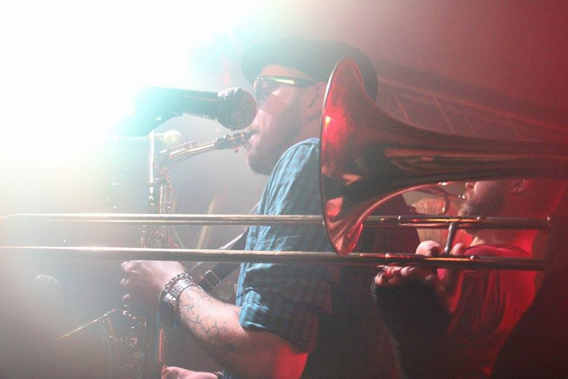
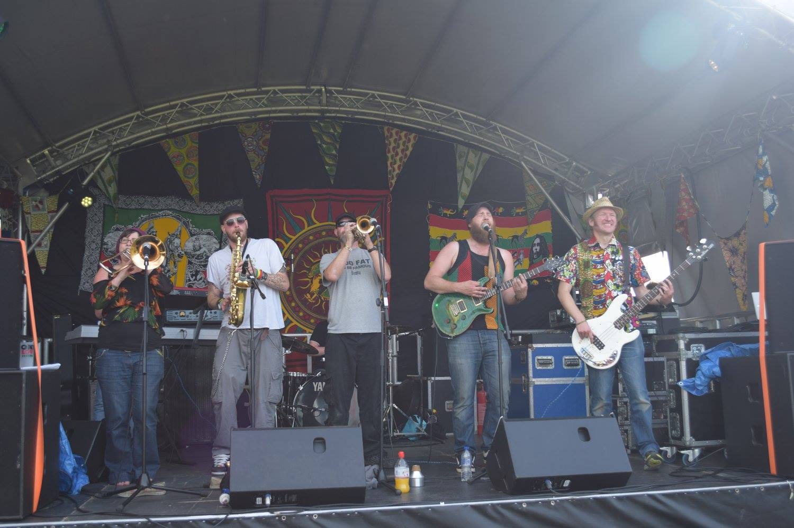
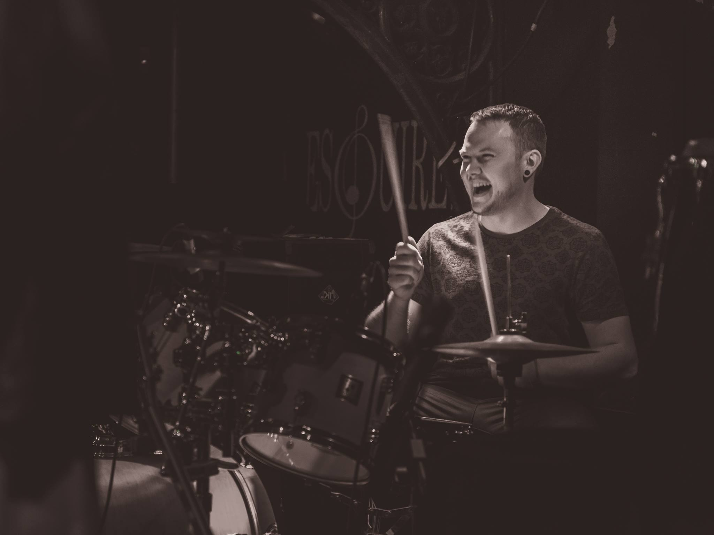

easydread are a seven piece Conscious-Rock-Reggae band from Bedfordshire
They combine sounds drawn from a wide range of influences, from Ska to Rap and Soul to Punk.
As they seamlessly blend powerful political imagery with sweet harmonies and heavy grooves easydread will get you thinking as well as skanking.
UPCOMING SHOWS
- Friday 13th May 2016 - Silver Bullet, Finsbury Park
- Saturday 14th May 2016 - World Food Festival, Welwyn Garden City
- Thursday 26th May 2016 Pig and Falcon, St. Neots
- Tuesday 31st May 2016 Crauford Arms, Milton Keynes
- Friday 10th June 2016 - Rhythms of the World fundraiser - Hitchin
- Saturday 16th July 2016 - Buckfest - Buckden, Cambridgeshire
- Saturday 23rd July 2016 - Rhythms of the World fundraiser - Hitchin
- Friday 5th August 2016 - Magic Garden, Battersea
- Saturday 6th August 2016 - Cople Proms Festival - Cople, Bedfordshire
- Saturday 13th August 2016 - Bulldog Bash Festival, Long Marston Airfield, Stratford-upon-Avon
- Sunday 18th September 2016 - Equinox (formerly Alchemy) Festival, Lincolnshire
Booking enquiries: booking@easydread.com




